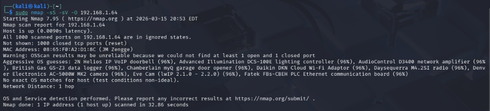
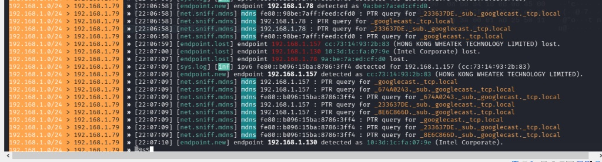
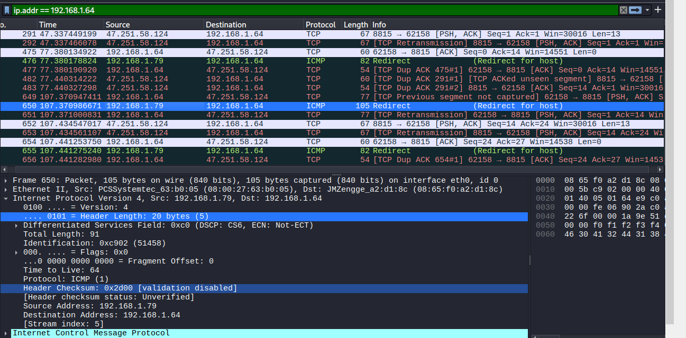

Actividad Extra: Auditoría de Seguridad IoT
Objetivo Técnico: Ejecutar un análisis forense de red (tráfico y comportamiento) de un dispositivo IoT comercial (un foco inteligente) operando dentro de una red de área local (LAN).
La finalidad es desmitificar la operación "Plug & Play", identificar comunicaciones salientes ocultas mediante interceptación Man-in-the-Middle, descubrir protocolos de telemetría y evaluar las brechas de privacidad expuestas hacia infraestructuras en el extranjero.

1. Laboratorio y Arsenal Táctico
Configuración del entorno de pruebas para garantizar visibilidad en Capa 2.
arp-scanynmappara reconocimiento.arpspoofpara la interceptación activa.wiresharkpara análisis forense de paquetes.
2. Metodología y Ejecución del Ataque (MitM)
Fases de descubrimiento pasivo e interceptación activa del tráfico.
Fase de Búsqueda y Reconocimiento
El primer paso fue mapear la superficie de ataque de la red local para aislar la dirección IP del objetivo. Se utilizó correlación física (encendido/apagado) y resolución de prefijos OUI (Organizationally Unique Identifier) del fabricante.
Una vez aislada la IP, se ejecutó un escaneo de puertos completos para perfilar los servicios locales del dispositivo IoT, buscando puertos de administración expuestos (Telnet/HTTP).
Fase de Intercepción (ARP Spoofing)
Se lanzó un ataque de envenenamiento ARP para alterar el flujo natural de la red. Esto obligó a que todos los paquetes enviados por el foco hacia el router pasaran obligatoriamente por la interfaz `eth0` de la máquina atacante.

Figura 2: Identificación del objetivo en terminal

Figura 3: Ejecución de ARP Spoofing exitosa
3. Análisis Forense: Hallazgos en Wireshark
Lectura de paquetes en tránsito y disección del flujo TCP.

Figura 4: Análisis 'Follow TCP Stream' de la telemetría
Durante la captura paralela en Wireshark, el tráfico filtrado por la MAC del objetivo reveló anomalías críticas de diseño:
- Destinos Externos Ocultos: El dispositivo establece túneles persistentes con servidores remotos no declarados. Las consultas
whoisde las IPs (ej. 47.251.58.124 y 47.254.41.55) revelaron que la telemetría se aloja en clústeres de Alibaba Cloud. - Puerto de Control: La comunicación bidireccional ocurre constantemente a través del puerto TCP 8815.
- Protocolo mDNS (Discovery): El foco inyecta consultas multicast
PTR (_googlecast._tcp.local), demostrando que escanea activamente la LAN en busca de otros ecosistemas inteligentes compatibles (como Chromecast o Google Home). - Exposición de Hardware: La herramienta Follow TCP Stream confirmó que la MAC Address y tokens identificadores se transmiten con ofuscación débil, haciéndolos interceptables.
4. Matriz de Riesgos y Remediación
Impacto operativo y controles recomendados para redes corporativas o domésticas.
| Tipo de Riesgo | Nivel | Descripción de la Vulnerabilidad |
|---|---|---|
| Privacidad Cero | Alto | El dispositivo efectúa la recolección y transmisión continua de metadatos de estado (encendido/apagado) hacia infraestructura de terceros (Alibaba Cloud). Esto permite a un actor externo perfilar con precisión los patrones de presencia y hábitos de los usuarios del inmueble. |
| Brecha de Perímetro | Medio | El mantenimiento de conexiones keep-alive (salientes) evade las reglas restrictivas de NAT del firewall, habilitando la inyección de cambios de firmware o comandos remotos sin capacidad de auditoría local por parte del administrador de la red. |
Estrategia de Mitigación Definitiva

Video Completo.
Reflexión Personal
La adopción masiva de dispositivos IoT "inteligentes" y de bajo costo a menudo sacrifica la seguridad en favor de la comodidad del usuario (Plug & Play). Esta auditoría demuestra claramente que un simple foco no se limita a recibir comandos de encendido y apagado, sino que actúa como un agente de telemetría constante que puede perfilar la actividad de un hogar u oficina, enviando datos a infraestructuras en el extranjero sin cifrado robusto.
A nivel técnico, comprender cómo interceptar y analizar este tráfico mediante técnicas de Man-in-the-Middle (ARP Spoofing) es fundamental para cualquier ingeniero de ciberseguridad. Nos enseña que la regla de oro para la domótica, ya sea empresarial o doméstica, es la segmentación estricta (VLANs). Bajo el principio de Zero Trust, nunca debemos permitir que un dispositivo IoT genérico comparta el mismo segmento de red que nuestras bases de datos, servidores o equipos de trabajo personales.